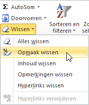

Opmaak kopiëren / wissen
Hoe je de opmaak van een cel kunt overbrengen naar andere cellen.
De opmaak en inhoud van een cel worden afzonderlijk opgeslagen. Je kunt daarom dan ook inhoud en opmaak afzonderlijk van elkaar kopiëren en/of wissen.
Opmaak kopieren
De snelste manier om de opmaak van een cel te kopiëren naar een andere cel is door gebruik te maken van de knop Opmaak kopiëren/plakken.
De werkwijze is als volgt:
- Selecteer de cel waarvan je de opmaak wilt kopiëren.
- Kies . De muisaanwijzer verandert nu in een kwastje ().
- Selecteer de cel(len) waarop je de opmaak over wilt brengen.
- Laat de muisknop los
Tip: Wanneer je dubbelklikt op de knop Opmaak
kopiëren/plakken dan kun je meerdere plakbewerkingen achter elkaar
uitvoeren. Om deze toestand weer op te heffen kun je opnieuw klikken op de knop
Opmaak kopiëren/plakken of drukken op de toets
Esc.
Opmaak wissen
De opmaak van cellen kun je als volgt wissen:
- Selecteer de cel(len) waarvan je de opmaak wilt wissen.
- Kies .
Figuur 1. Opdracht wissen op het lint

Tip: Via deze weg kun je behalve de opmaak, ook de inhoud of beide
wissen.
Waarschuwing: Met de toets DELETE wis je alleen de inhoud van een cel. De opmaak van de
cel (lettertype, kleuren, uitlijning, getalopmaak, enz.) wordt niet gewijzigd en
blijft gewoon aanwezig in de lege cel.